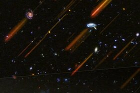

Future Prospects with the Roman Space Telescope

It is always fun to brainstorm future science endeavors with next generation facilities and era of the Nancy Grace Roman Space Telescope is fast approaching. Roman will have a similar primary mirror size to the Hubble Space Telescope but covers 100 times wider area on sky in a single shot. This will allow astronomers to map significant swaths of the sky at a resolution similar to Hubble (aka, a spectacular view!). Check out this press release from NASA/Space Telescope Science Institute today discussing future prospects of Roman. Their press release composite direct and grism image above from the GOODS-S field (i.e., the CANDELS and 3D-HST surveys combined) is one of the most spectacular images I have ever seen! It is truly beautiful. Roman will do this and so much more!